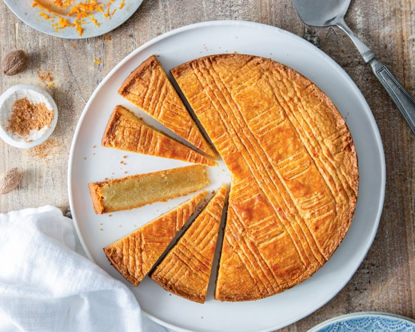

Home
Boterkoek

Description
Dutch for butter cake, this shortbread-like cake is best served in thin slices with coffee.
Ingredients
- 2 cups plain flour
- 250g butter
- 3/4 cup white sugar
- pinch of salt
- 1 teaspoon vanilla essence
Preparation
- Get butter to room temp - DO NOT MELT
- Preheat oven to 200°C
Method
- Mix all ingredients in a large bowl
- Place in buttered circular baking tin
- Bake at 200°C for 30min